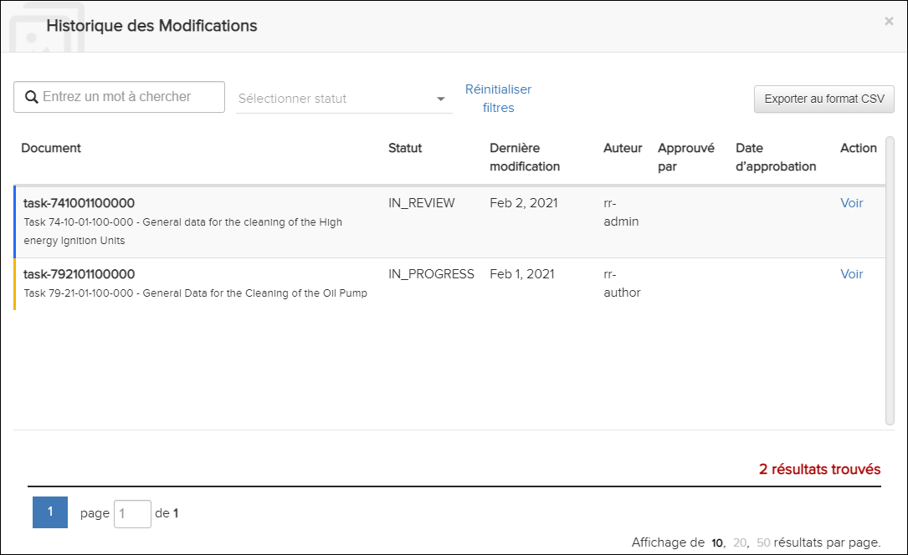
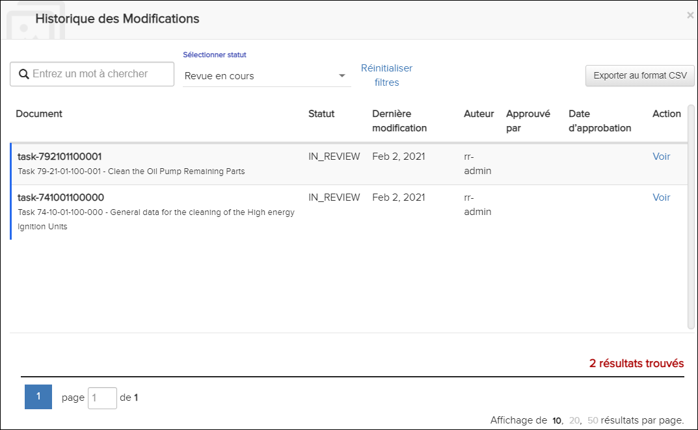

Non applicable pour Pinpoint Standalone Light.
Si l'utilisateur dispose des autorisations pour le privilège Peut consulter le journal des modifications, le document peut être visualisé à partir de la boîte de dialogue Historique des Modifications. Vous pouvez accéder à cette boîte de dialogue en sélectionnant l'icône Afficher l'historique des révisions dans le volet Table des matières. Par example:
Historique des Modifications Dialogue

Historique des Modifications Dialogue - Sélectionner l'état
Cliquez sur Réinitialiser filtres pour supprimer les valeurs des filtres Rechercher ou Sélectionner statut.
Vous pouvez également exporter le contenu de Historique des Modifications au format CSV. La boîte de dialogue Historique des Modifications apparaît. Cliquez sur le bouton en haut à droite de la boîte de dialogue. Le fichier est téléchargé. Ouvrez le fichier pour afficher le contenu.